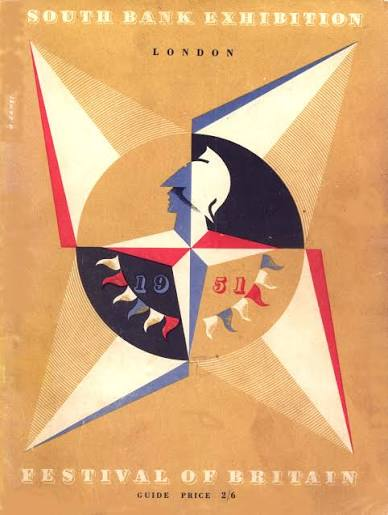
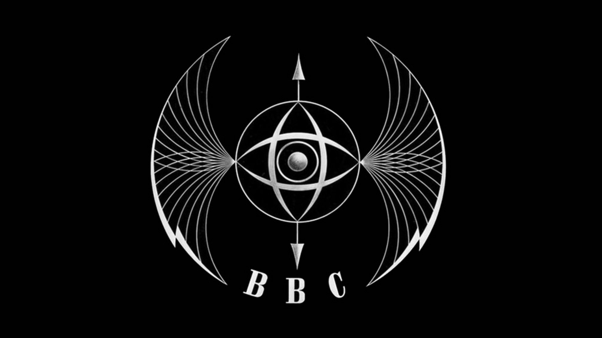
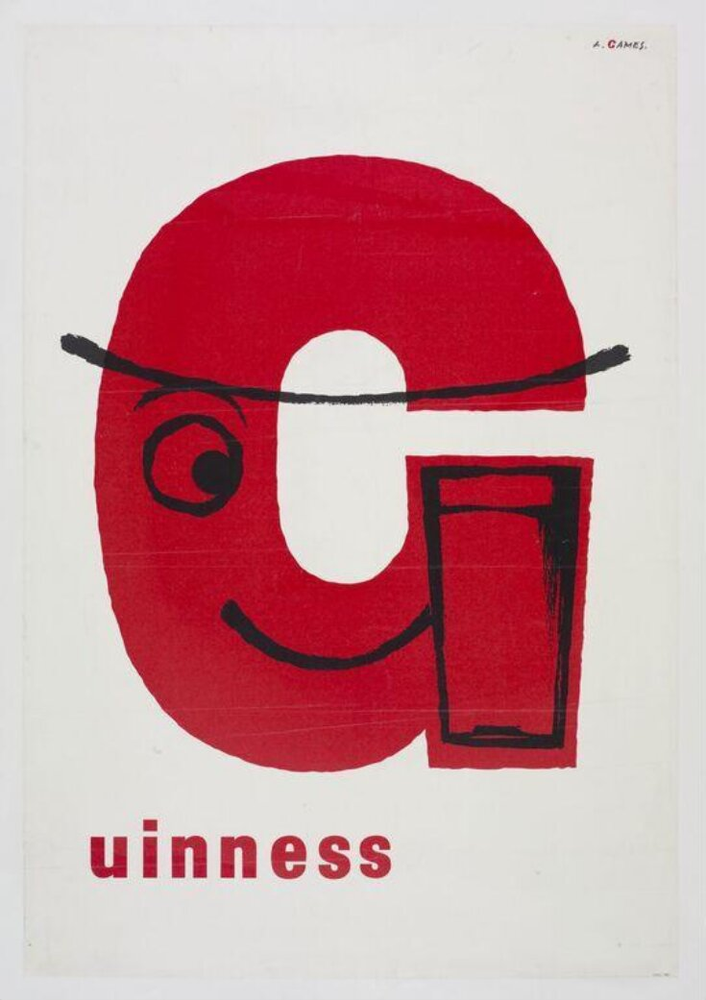
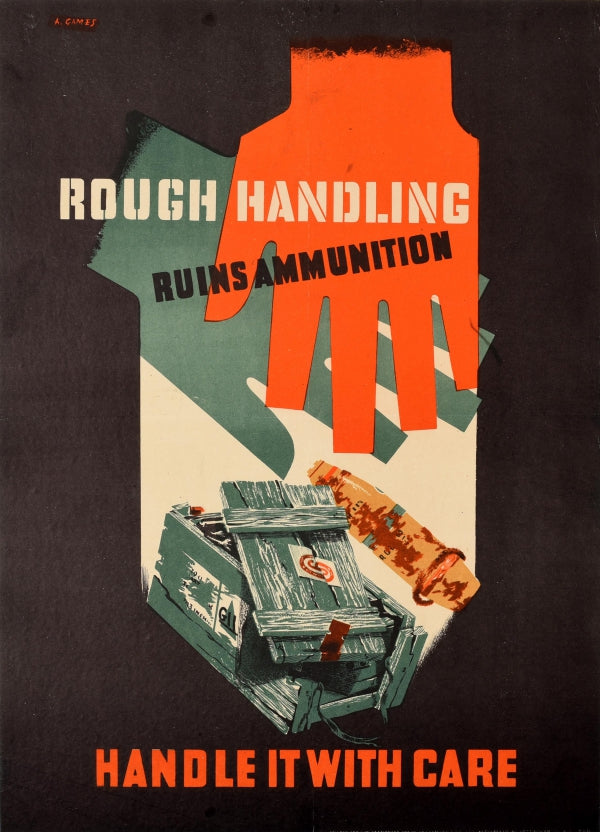

Abram Games
Born:July 29th 1914
Died:August 27th 1996
Born:July 29th 1914
Died:August 27th 1996
Abram Games was a British graphic designer and artist known for his poster designs and his design philosophy with his quote "maximum meaning,minimum"
Click any poster card below to expand details & design history
.jpg)
Year: 1942
Client: Army Bureau of Current Affairs (ABCA)
Medium: Lithograph Poster
About: Created during WWII to inspire soldiers by contrasting modern British social housing developments against derelict slums. It exemplifies Games' philosophy of combining symbolic imagery into a single stark message.
.jpg)
Year: 1941
Client: Auxiliary Territorial Service (ATS)
Medium: Recruitment Poster
About: One of Games' most controversial posters. Dubbed the "Blonde Bombshell", it was withdrawn after Parliamentary debate for being "too glamorous" for military recruitment, though it remains a landmark of 20th-century graphic design.

Year: 1951
Client: Festival of Britain Committee
Medium: National Brand Identity / Graphic Symbol
About: Known as the "Festival Star", this emblem featured Britannia's head atop a compass star with bunting flags. It was featured on millions of souvenirs, posters, coins, and banners across post-war Britain.

Year: 1953
Client: BBC (British Broadcasting Corporation)
Medium: Animated On-Air Identity
About: Affectionately nicknamed "The Bat's Wings", this was the BBC's first animated television symbol. It combined a globe, flashing eye, and revolving wings symbolizing international broadcasting power.

Year: 1956
Client: Guinness Brewery
Medium: Commercial Advertising
About: Games created striking minimalist advertisements for Guinness, combining the iconic dark pint silhouette with bold geometric shapes to convey energy and strength without unnecessary visual clutter.

Year: 1940
Client: War Office
Medium: Military Safety Poster
About: Designed during Games' tenure as Official War Poster Designer. The poster visually merges soldier weaponry with mechanical precision, embodying his famous motto: "Maximum Meaning, Minimum Means".